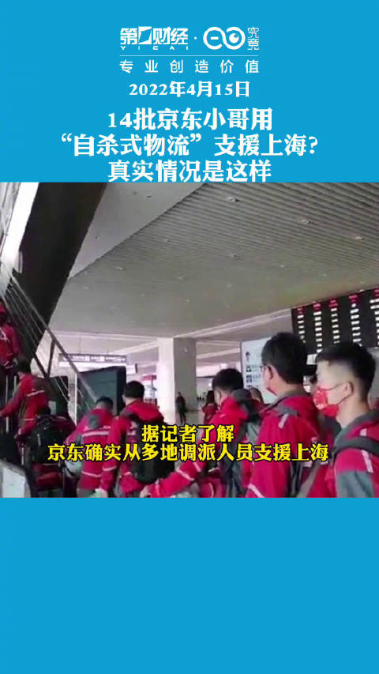
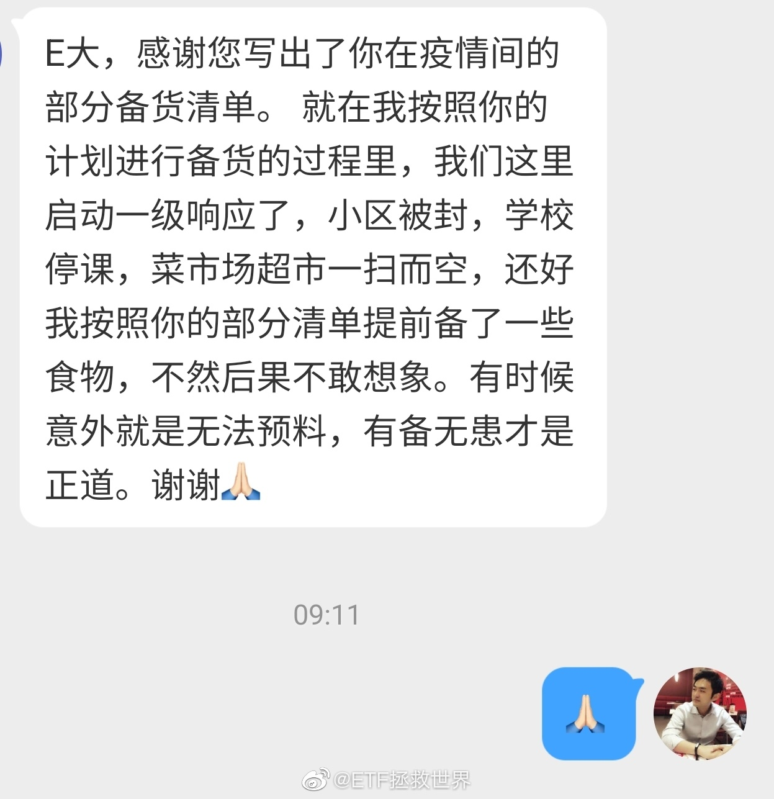

咖啡达人请推荐你觉得好的豆子。

ETF拯救世界
2022-04-16
ETF拯救世界
2022-04-16
希望人民记住京东以及京东人做的这些事情。
@第一财经日报:
【#京东回应自杀式物流支援上海##京东自杀式物流支援上海真相#】
近日，有消息称京东物流通过“自杀式物流”方式向上海运送物资，一批次京东小哥、小姐姐进入上海后需要就地隔离，接着下一批次小哥继续运输。消息称共有14批次小哥，通过循环实现每天都有物流运输。
据第一财经记者独家了解，上述信息部分属实，京东确实从多地调派了多名小哥支援上海。数量上，京东物流调派的小哥不止14批次。同时，所有被调派的小哥都已打过三针疫苗，进入上海后并非就地隔离，在遵守政府管控的情况下小哥可以正常派送商品。截至目前，全国多地约3000名快递小哥等一线抗疫保供人员将陆续抵达上海。 独家|14批京东小哥用“自杀式物流”支援上海？真实情况是这样
独家|14批京东小哥用“自杀式物流”支援上海？真实情况是这样  第一财经日报的微博视频
第一财经日报的微博视频
近日，有消息称京东物流通过“自杀式物流”方式向上海运送物资，一批次京东小哥、小姐姐进入上海后需要就地隔离，接着下一批次小哥继续运输。消息称共有14批次小哥，通过循环实现每天都有物流运输。
据第一财经记者独家了解，上述信息部分属实，京东确实从多地调派了多名小哥支援上海。数量上，京东物流调派的小哥不止14批次。同时，所有被调派的小哥都已打过三针疫苗，进入上海后并非就地隔离，在遵守政府管控的情况下小哥可以正常派送商品。截至目前，全国多地约3000名快递小哥等一线抗疫保供人员将陆续抵达上海。

1471万次播放
00:14
ETF拯救世界
2022-04-16
不知道之前说我贩卖焦虑的人看了是何感想。
- 